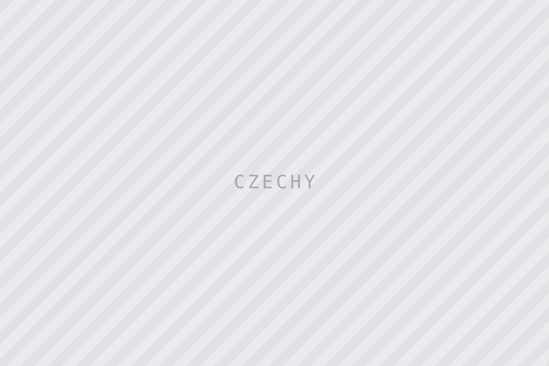
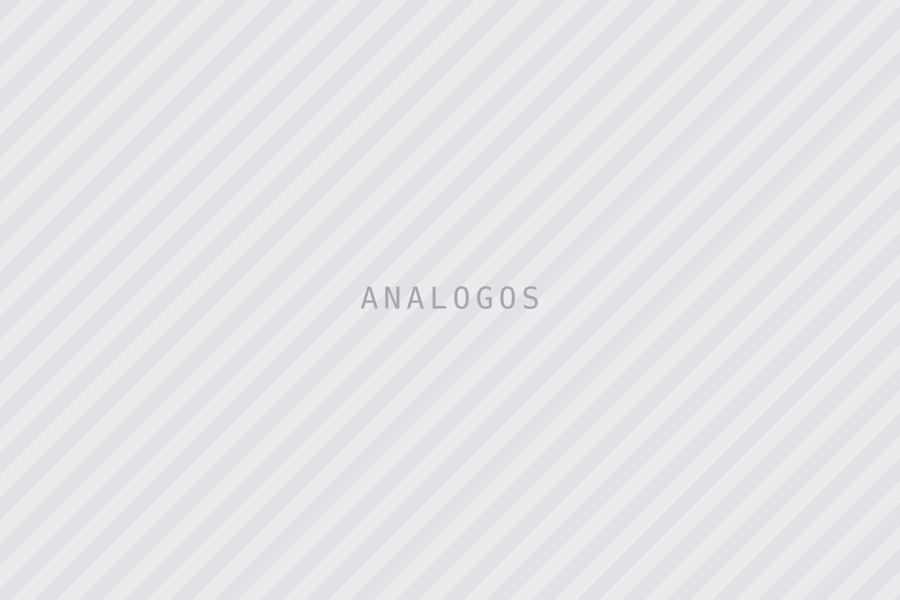
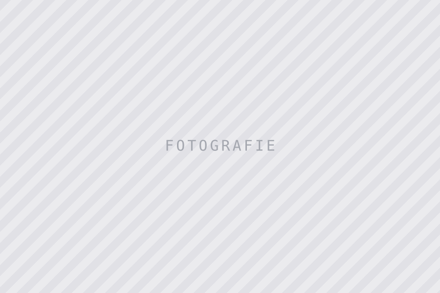

Galerie

Czechy
Česko, jak jsem ho viděl
Czyli analogowe spojrzenie na miejsca jakie odwiedziłem w Czechach.
04.2026

Analogos
Analogos
Osobisty projekt o fotografii analogowej, w głównej mierze średnioformatowej, z moją ulubioną Mamiya 645 pro.
Powrót do pierwotnej radości z fotografii: czekania na rezultat i świadomego ograniczania się.
Krajobrazy
Krajobrazy
Ulotne chwile i unikalne perspektywy w Beskidach — moim miejscu na ziemi.
Moje kadry to próba uchwycenia piękna i spokoju w sposób najbardziej osobisty.

Fotografie
Fotografie
Czegokolwiek bym tutaj nie napisał, nie będzie to miało większego znaczenia :)